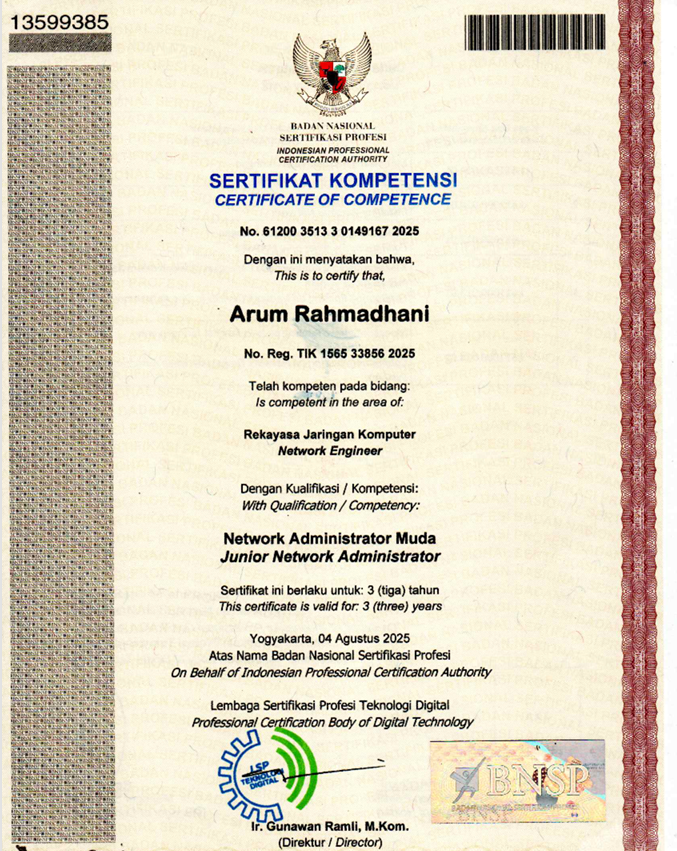
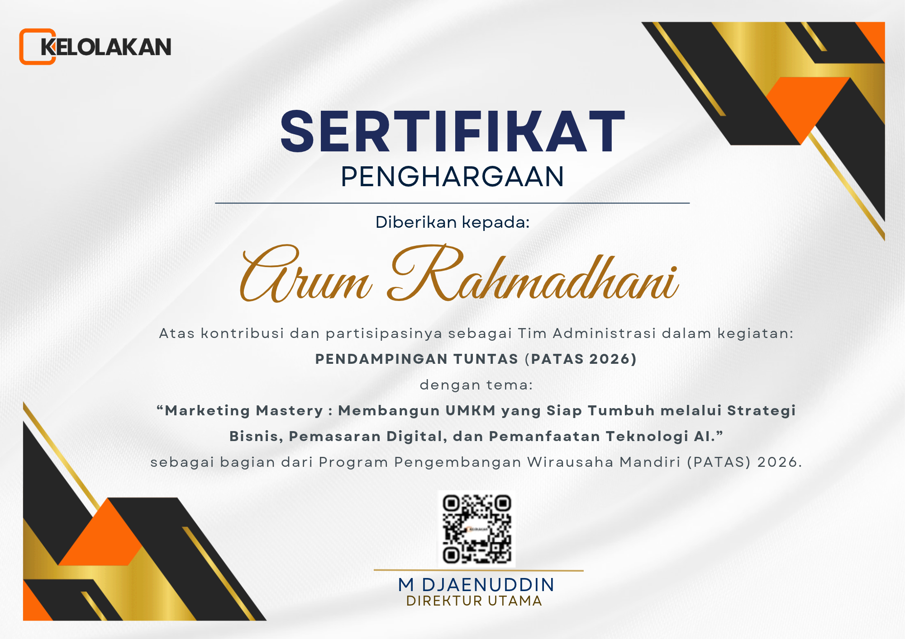

Dokumentasi Karya
Beberapa dokumentasi proyek dan hasil pekerjaan saya.




HALO, SELAMAT DATANG DI PORTOFOLIO SAYA
Business Analyst | Data Analyst | Administrasi Program | Web Developer | Data Entry
Menggabungkan kemampuan analisis, administrasi, dan teknologi informasi untuk menghasilkan solusi yang efektif dan bermanfaat.
Saya merupakan lulusan Program Studi Sistem Informasi Universitas Trunojoyo Madura yang telah menyelesaikan pendidikan pada Juni 2026.
Saya memiliki pengalaman profesional di bidang Business Analysis dan Administrasi Program. Setelah menyelesaikan pendidikan, saya memperoleh pengalaman melalui program magang sebagai Asisten Business Analyst di PT Kelola Lebih Baik. Dalam peran tersebut, saya terlibat dalam analisis data, riset bisnis, penyusunan laporan, serta pendampingan UMKM.
Selanjutnya, saya bekerja sebagai Admin Program di SPPG Pasuruan Lumbang dengan tanggung jawab meliputi stok opname gudang, administrasi surat masuk dan keluar, pendataan penerima manfaat, pengelolaan media sosial, serta pembuatan dan pengeditan konten digital.
Selain memiliki pengalaman dalam bidang administrasi dan analisis bisnis, saya juga memiliki ketertarikan pada analisis data, Machine Learning, Artificial Intelligence, dan pengembangan aplikasi berbasis web. Saya senantiasa terbuka untuk mempelajari hal baru dan mengembangkan kemampuan di lingkungan profesional.
Menyelesaikan pendidikan tinggi pada bidang Sistem Informasi dengan mempelajari analisis sistem, pengelolaan data, proses bisnis, pengembangan aplikasi, dan teknologi informasi.
Lulus Juni 2026Mendukung proses analisis dan pengembangan bisnis melalui kegiatan:
Mendukung kegiatan administrasi dan operasional program dengan tanggung jawab meliputi:
Perancangan dan implementasi sistem Continuous Integration dan Continuous Deployment (CI/CD) otomatis pada website landing page berbasis Docker Container.
Pengembangan aplikasi web untuk visualisasi dan analisis data Call Center Kabupaten Sidoarjo menggunakan Streamlit.
Analisis dan klasifikasi potensi keuangan UMKM menggunakan metode Data Mining, termasuk algoritma LightGBM dan Explainable Boosting Machine (EBM).
Pengembangan sistem rekomendasi wisata Kabupaten Pasuruan menggunakan pendekatan Utility-Based dan data survei pengguna.
Pengembangan model Deep Learning untuk membedakan ekspresi wajah asli dan palsu menggunakan Convolutional Neural Network (CNN).
Pengembangan website e-commerce sederhana dengan fitur katalog produk, filter, keranjang belanja, dan checkout.
Pengembangan aplikasi kasir berbasis web untuk pengelolaan transaksi, stok barang, dan laporan penjualan menggunakan database relasional.
Pengembangan aplikasi pelacak kesehatan Desa. untuk pelacak kesehatan, ukur BB, dan edukasi kesehatan lainnya.
Beberapa dokumentasi proyek dan hasil pekerjaan saya.


Terbuka untuk peluang kerja, kolaborasi, dan pengembangan profesional.